0
0
getting things ready...
(this may take 1-2 minutes)
the redevelopment and SLR
Cleanup Zone
Elevated Building Pad
Soil Densification
history lives
slr: reimagining place
Emergent Neighborhood
SLR: Resilient Design
Building One
Building Two
Building Three
Nimitz House
Torpedo Building
Yerba Buena
Lighthouse
Geotechnic remake
The Navy Cleanup
Urban Design
New Neighbors
Here & Now
Future People
Green Returns
Well-Hydrated
The Wilds
Adaptive Perimeters
History Lives
Rescuing Treasure Island's Historic Buildings from Sea Level Rise
The man-made Treasure Island was originally conceived as the future home of a new San Francisco airport, including a hub for the trans-Pacific Clipper service from Pan American World Airways (Pan Am). Instead, the island’s first event was the Golden Gate International Exposition 1939-1940. The world's fair celebrated "A Pageant of the Pacific", as well as the completion of the Golden Gate and Bay Bridges.

In 1939 and 1940 the Golden Gate International Exposition put on a multi-colored light show every night during the season. The Tower of the Sun, the tallest structure at the fair, acted as a beacon. (Treasure Island Museum, 1939)
The fair explored real and imagined views of nations and cultures of the Pacific Ocean. Many countries sponsored pavilions -- even some nations that were nowhere near the Pacific, because although the theme was Pacific Unity, the fair welcomed the whole world. (Treasure Island Museum, 1939)
Over the next 80 years, without a complete redo as planned, the island’s historic buildings might be flooded or even lost to San Francisco’s rising Bay. However, the Treasure Island Development Authority (TIDA), a government agency, has comprehensive plans for protecting the place and its historic buildings from sea level rise (SLR).
In the first phase of reconstruction, now in progress, the perimeter of the island around the historic buildings is being elevated to withstand 16” of sea level rise relative to the 2000 level. Plans are in place for higher levels of SLR as well. For example, at 30 inches of SLR, an adaptive management plan for 36 inches will be triggered to allow time to build more improvements.
The Spirit of India sculpture by Jaques Schnier, in the foreground, has remained on the island since the fair. It and its female counterpart will greet passengers disembarking at the new ferry terminal. (Treasure Island Museum, 1939)
The massive face of the 80 foot tall sculpture of the goddess Pacifica is shown here on the cover of the fair's guidebook. The fair closed its second season at the end of September in 1940. Germany had already destroyed thousands of Jewish businesses and deported tens of thousands of Jews to concentration camps. As Hitler had also invaded Poland in 1939, war chatter was everywhere, so instead of a commercial airport, the U.S. Navy took over Treasure Island. (Treasure Island Museum,1939)
1939 U.S. postal stamps commemorating the Golden Gate International Exposition and other worlds' fairs (Treasure Island Museum)
Ironically, only one year after a fair celebrating Pacific Unity closed, came Pearl Harbor. In this act of war, the Empire of Japan attacked the American base by air and sea. Japan's goal was to annihilate the entire U.S. Pacific Fleet, docked at the base on Oahu, Hawaii. The day after, on December 8 1941, President Franklin D. Roosevelt gave his "Day of Infamy" speech and the U.S. Congress declared war on Japan, in effect entering World War II on all fronts.
This image shows the back cover of a book published by the Navy for sailors about Treasure Island's substantive engagement during World War II. (The U.S. Navy, 1946)
During a WWII naval parade on Treasure Island, members of the WAVES, the women's naval auxiliary, stand at attention in front of the mural on the Federal Building.

The painted panels were titled "Conquest of the West by Land" and "Conquest of the West by Sea", by Federal Arts Project painter Hermann Volz. (Treasure Island Museum,The U.S. Navy, 1946)
Pan Am's trans-Pacific Clipper service moved to Treasure Island in 1939, but as the U.S. entered World War II, airport plans were abandoned.
The Pan Am Clippers, as illustrated here, did use the island as its hub during the fair. The service represented the first U.S. commercial carrier to offer trans-Pacific flights and air mail. (Treasure Island Museum)
Capt. Eugene Rideout's original letter from 1920 to the U.S. Navy suggested that an airport be built on Yerba Buena Shoals.

Although planes and dirigibles did take off from Treasure Island during the war, they were part of the Naval Air Force. The air force did not become a separate branch of the U.S. Armed Forces until 1947. (Treasure Island Museum, 1920)

In 1943, the Navy Chapel was built from materials left from the demolition of the fair. The chapel's look is influencing the design of the Culture Park, which will surround it. The chapel is north-south oriented; the hills in the distance are the Marin Headlands and Angel Island. The steeple neatly delineates the two. (Treasure Island Museum)
SLR: Reimagining Place
Human-Made Island
Treasure Island was built in the 1930s on Yerba Buena Shoals. It was constructed at the same time as what was then known as the "new" and first Bay Bridge. The sandy fill was approximately 20 to 50 feet thick, depending on location.

[picryl/National Archives and Records Administration (styled below as picryl/NARA),1936]
Yerba Buena is in the background as Treasure Island is built. The boulders that created its original perimeter came from the making of the Bay Bridge Tunnel, blasted through the hill on Yerba Buena.
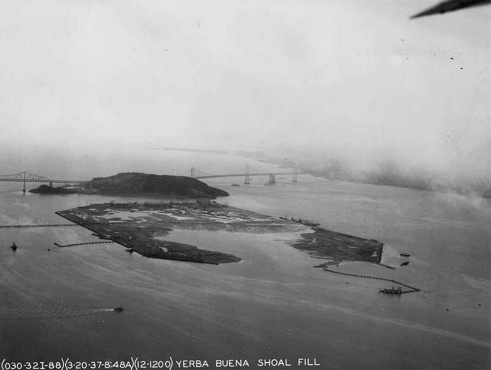
Yerba Buena Island, also part of the redevelopment, was naturally rather than man-made. It is hilly, 340 feet above sea level and 20,000 years older, so far less vulnerable to SLR than its human-made neighbor. (picryl/NARA, 1937)

Geologists believe that without the adaptations planned to address sea level rise (SLR), the northwest corner of Treasure Island would sink at the same rate at which the Bay is rising. In this image, the northwest is at the bottom left corner. (Treasure Island Museum, 1937)
In 1937, surface completed, the island was still called "Yerba Buena Shoals Fill.

By 1939, as the a world's fair was poised to open, the fill was named Treasure Island, after both the novel by Robert Louis Stevenson and as a Depression era nod to the mid-19th century California gold rush. (picryl/NARA)
The tale of the making of both the old and the new island is a tale of geotechnical trailblazing.
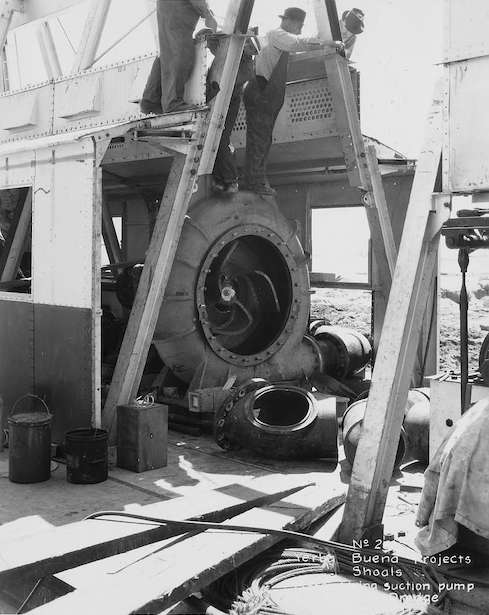
This is a 1930s suction pump used in the process. (picyrl/NARA)
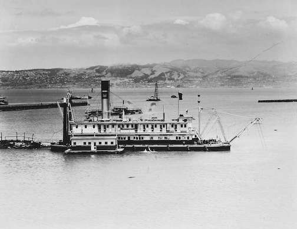
In 1936 the ship "San Joaquin", a pipeline dredge, siphoned underwater shoal sediment, largely sand, to create a new place. (picyrl/NARA)
The "San Joaquin" dredge spews sand in a different location to build up another part of the new island, now the location of the Treasure Island marina. [San Francisco History Center/San Francisco Public Library, styled below as (SFHC/SFPL)]

Some of the pipelines used to make the island were a mile long. This view of dredging is from the site that would become the Golden Gate International Exposition's Hall of Transportation, aka Building Two. (picyrl/NARA, 1937)

More on the origin story of the island (The San Francisco Chronicle, 1939)

An analog architectural model of the man-made Treasure Island and the 1939 fairgrounds float in a tub. (Marcello Camarri ,1938, c. Ron Henggeler)
Historic Building One, to be preserved, is seen behind the excavator. The geotechnical improvements are in progress now during phase 1 of the rebuild. Fortifications begin at the seabed and continue up, to create higher, drier, more solid ground on which to make all new open space, parks, infrastructure, and buildings.

(Cross Media International, 2020)
Emergent Neighborhood
Community on the Islands
Yerba Buena is the natural landform of the future Treasure Island development. It was occupied for thousands of years by visiting bands of indigenous Chochenyo speaking Ohlone people before being colonized by the Spanish and deeded in the early 18th Century to the Isidro de Castros. The Castro's descendants became one of the largest Californio families--Californians of Spanish descent. (It was several hundred years before its neighbor-island was built and peopled.)
The U.S. Coast Guard will remain indefinitely on the portion of the island south and west of the freeway. In the redevelopment, the largest, most desirable units will be on Yerba Buena Island. One condo building is scheduled for completion in 2022. The Treasure Island Development Authority (TIDA) plans parks, walkways, trails and bike paths -- all favored over the roads -- to connect the two islands.
Treasure Island's first community was the Golden Gate International Exposition, the ten thousand who worked there combined with the daily influx of visitors during the fair's two seasons. (Treasure Island Museum, 1939)
First Lady Eleanor Roosevelt initially visited the island in 1938. She described it in her newspaper column, "Days such as yesterday are really very hectic. Neither Miss Chaney, Mrs. Scheider nor I, had enough time to eat lunch. We had a glass of milk and graham crackers and then sallied forth at 1:45....to Treasure Island, where I was to assist in the ceremonies incidental to the breaking of ground for the Federal Building."
Roosevelt continued, "I think they have chosen a delightful name for this island, which has been built on an under-water bank with WPA labor.....We hope it will contain so many treasures of beauty and educational value, that the whole of the United States will profit by the work which has been done there." (picryl/NARA, 1943)
Mrs. Roosevelt returned to the island to speak when the fair was in full tilt. The fair presented a different slate of programs and shows on each of its 254 days. (Treasure Island Museum)
The fair's walled Chinese Village, designed by Mark Daniels, was run by a group of merchants from San Francisco's Chinatown. Among the attractions were acrobats from Northern China, Cantonese food and a seven-story pagoda.

(Treasure Island Museum, 1939)
(Paperboys were treated to a day at the fair by their employer, Shopping News. (Treasure Island Museum, 1939)
The longest lived -- though constantly changing -- community was the U.S. Navy, which occupied Treasure Island for more than 50 years. Subsequent to the closure of Naval Station Treasure Island a community of some 2,000 residents residing in the former Naval housing has developed pending the redevelopment. The redeveloped Island will provide 8,000 housing units of which 2,173 are designated as affordable.
WAVES* at their commissary during World War II (The U.S. Navy, 1946) *Women Accepted for Volunteer Emergency Service
In the last and most intense year of World War II, U.S. Navy personnel, including sailors, totaled almost 3.5 million. The U.S. population was 140 million in 1945, which means that 1 in every 40 men, women and children served the American war on the high seas. 1 in every 20 Americans served that year in the U.S. Army.
(The U.S. Navy, 1946)
The Navy Chapel. White sailors, WAVES and members of the naval administration worshipped here during World War II. It provided space for thousands of war weddings and funerals. (The U.S. Navy, 1946)
SLR: RESILIENT DESIGN
Parks All Around, Well-Managed Water, Fortified Perimeters
The new Treasure Island will be comprised of more than 50 percent green space. When combined with its sister island, Yerba Buena, the entire redevelopment will be 75 percent, publicly accesible, open space.
In 1920 Captain Eugene Rideout took soundings, water depths, around Yerba Buena Shoals. The underwater shoals caused many shipwrecks. Rideout suggested an island be built here to be used as an airport. And with land above them, the shoals would be visible and no longer a hazard. (Treasure Island Museum)
Rideout lived to see his island idea realized and visited in 1938 by President Franklin D. Roosevelt. But the commercial airport was not to be. Instead, the Golden Gate International Exposition inaugurated the island. The fantastical architecture of the fair was surrounded by lush lawns, gardens and bubbling fountains and pools.
On the left is the Homes and Gardens building and on the right is Mines, Metal and Machinery. Long before Silicon Valley, the fair celebrated California, innovation and new technologies. (Treasure Island Museum, 1940)
Sailors and WAVES* populated Treasure Island during World War II and the Navy stayed until 1997.
*Women Accepted for Volunteer Emergency Service
Until the new homes are completed and occupied, vintage Navy structures remain in use, as well as the Navy's asphalt, concrete and other impervious surfaces. The Navy's hard surfaces cause rainwater ponding. All legacy paving and sidewalks will be replaced in the redevelopment by well-draining surfaces. All parks, paths, trails and roads are being designed for sustainability. (The U.S. Navy, 1946)
The new Treasure Island development will represent the largest expansion of public open space in San Francisco since the creation of Golden Gate Park in 1870.
Yerba Buena Island, naturally occuring, has always been green. The Yerba Buena Management Plan calls for the restoration of native plans and the culling over time of non-native species.
This Yerba Buena postcard shows only grass because in the later 19th century, when it was called Goat Island, herds destroyed all other vegetation. It was subsequently reforested. (Treasure Island Museum, postmarked 1921)

The plant kingdom will return in full force to Treasure Island with the redevelopment, as pictured in this rendering by the landscape architecture firm CMG. (TIDA, TICD 2011)
Building One
In a 1930s artist's rendering of the proposed Treasure Island airport, Building One would become the main passenger terminal. It plus the hangars known as buildings Two and Three, also on Treasure Island, are significant examples of 1930s Art Moderne architecture.
Building Two is shown as the airport hangar it would have been if the airport had been realized. The China Clipper flying boat is also pictured. (www.airfields-freeman.com/)
Building One would house the administration for the Golden Gate International Exposition, parts of the naval administration, and, later, the Navy-Marine Corps and Coast Guard Museum.
Its later tenants, The Treasure Island Museum and One Treasure Island, the social services agency, will also reside in the preserved edifice in the new development.

The south facade of Building One during construction in 1938 [San Francisco History Center, San Francisco Public Library (styled below as SFHC/SFPL), 1938)
Building One, restored and with a redesigned interior, will greet all visitors to the new Treasure Island. Arrivals will exit the ferry terminal and the multimodal transportation hub at the refurbished plaza, the entryway to the new development.
The opening of the Golden Gate International Exhibition was also the "Treasure Island Day of Dedication" at Building One, welcoming the human-made island to the world. (NARA,1939)
Building One served as part of the base's naval headquarters throughout the 20th Century.
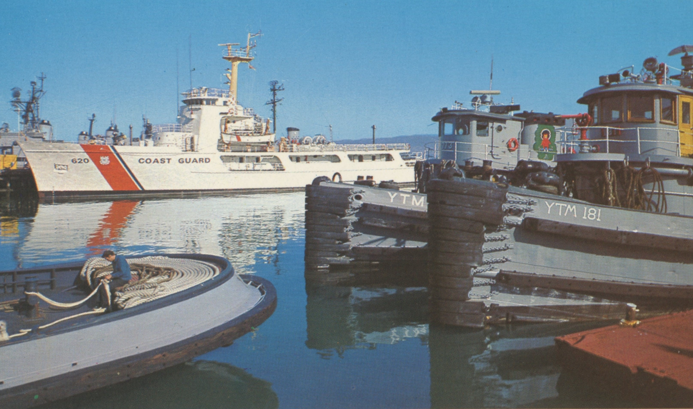
The white vessel is the U.S. Coast Guard's mid-1960s Endurance Cutter moored at Treasure Island. Yerba Buena Island will remain the location of a Coast Guard Station. (Treasure Island Museum)
For the six decades the U.S. Navy ran Treasure Island, it was the site of numerous naval training courses. Many buildings had classrooms.

In WWII sailors train to become radio technicians. They are studying electrical waveforms on an oscilloscope. (The U.S. Navy, 1946)
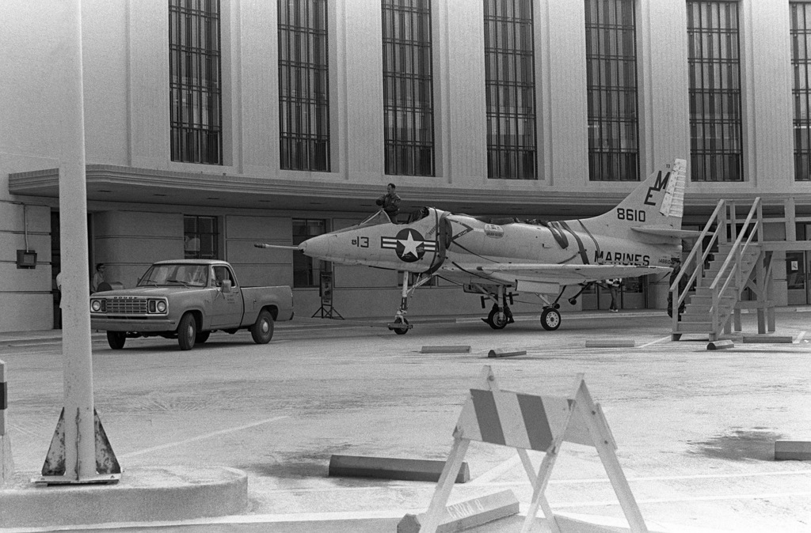
In 1984 a pickup truck tows an A-4 Skyhawk aircraft past Building One. The jet was exhibited at the Navy-Marine Corps and Coast Guard Museum, the earlier incarnation of the museum on Treasure Island. (NARA)
The facade of Building One appeared as a Nazi era Berlin Airport in Steven Spielberg’s 1989 movie, Indiana Jones and the Lost Crusade. Banners were added in post production so as not to unsettle drivers on the Bay Bridge. (Paramount Pictures, 1989)
In the redevelopment, the ferry terminal, Building One and some of the new construction around it is called the Island Center.

(TIDA, TICD, 2011)
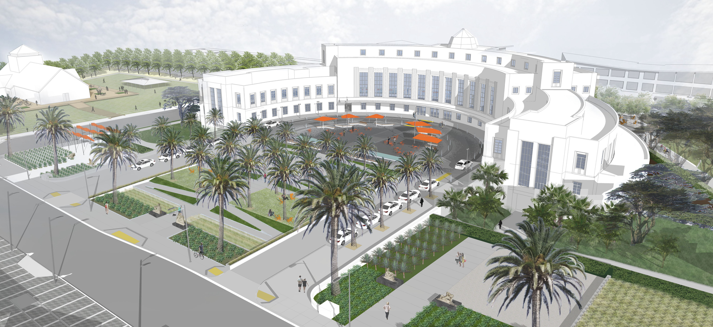
On Avenue of the Palms, Building One's refurbished plaza and new surrounding parks will feature the island's signature palm trees. (TIDA, TICD, 2011)
Building Two
Hall of Transportation
Built to serve first as the Hall of Transportation during the Golden Gate International Exposition, it hosted exhibits on new technologies from companies such as Ford, General Motors and Pan Am.
(picryl, 1938)

Shot from the Tower of the Sun, this image shows construction of The Pool of Nations, Treasure Garden and The Hall of Transportation. (Marcello Camarri, 1938/ digitally remastered and saved by Ron Henggeler)
In 1939, General Motors displayed new model cars in The Hall of Transportation. The country was still in the Great Depression and very few people owned autos, perhaps inspiring the popular fair activity of posing for photos sitting on the hoods of the shiny cars or standing beside them.
GM also exhibited the "Transparent Pontiac Sedan", with a shell made of "a new transparent plastic" -- plexiglass. Ironically, nearby the Union Pacific Railroad's neon sign read "Steamliners and Their Challengers". (nbl.livejournal.com)
The large bas-relief at the entrance to Building Two represents the "Spirit of Transportation". The large, decorative objects in front are mooring bollards, used with rope on large ships, piers or quays to tie up. Reminders of the Navy remain ever-present on Treasure Island. (picryl/Library of Congress, 1939)
Because of the war, Buildings Two and Three became part of the naval station. Since decommissioning in 1997 both buildings have been used as set shops and sound stages for film and television.
Productions on Treasure Island since the City of San Francisco took jurisdiction include The Matrix, The Pursuit of Happyness, The OA and Mythbusters. (NARA, 2011)
Building Three
The Palace of Fine and Decorative Arts
Buildings Two and Three were built to become identical twin airport hangars.
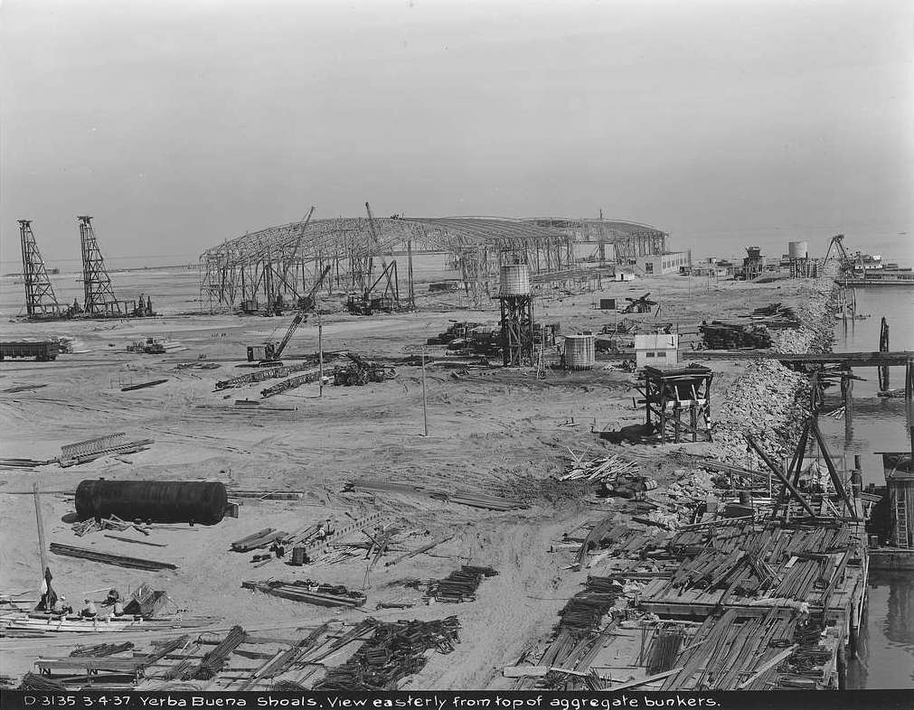
(picryl/NARA, 1939)
During the Golden Gate International Exposition, Building Three was named The Palace of Fine and Decorative Arts. It was broken up inside into small gallery spaces to house 20 million dollars worth of art, which would be almost 382 million dollars today.
The Palace of Fine and Decorative Arts ,1939-1940 The Elephant Train, shown here, shuttled visitors around the fair. (Treasure Island Museum/ Paul Totah)
Temporary structures were constructed around Buildings Two and Three to enhance them for the fair. Three sides of Building Three were wrapped in a one story addition and the entrance was decorated with a marquee and fluting, an art moderne flourish. (picryl/NARA, 1939)
In 1939 the Golden Gate International Exposition brought in only half as many people as anticipated, 10 million rather than 20. In debt, the organizers almost decided that a second season was not viable.

(picryl/NARA/Hiistoric American Buildings Survey/Library of Congress, 1938)
To rescue the box office one of the organizers had a Eureka! moment: "Art in Action". Why not invite some of the big names in the world of fine arts to create pieces during the summer season? The artists and their processes would become part of the entertainment, not just the finished pieces.

Neon signs outside The Palace inviting patrons to witness real artsts at work (Herbert "Bud" Stewart/ Treasure Island Museum, 1940)
The Depression was the era of the great American and Mexican muralists. Diego Rivera was practically a household name, due to his skirmish with robber barron John D. Rockefeller. Rockefeller refused to hang the mural he had paid Rivera to create, because it exhibited the artist's communist beliefs. It had been meant for Rockefeller's massive new commercial development in the center of New York City.
For Art in Action Rivera was commissioned to paint on the subject of Pan American Unity. On permanent loan to the City College of San Francisco, the mural can be seen until 2023 free-of-charge at San Francisco MOMA. Rivera and painter Frida Kahlo were married in San Francisco during their time at the fair, and if you look closely among the multitudes pictured, you will find Frida. (Banco de Mexico, 1940)
The mural titled "The Marriage of the Artistic Expression of the North and of the South on This Continent" measures 22 by 74 feet. Painted on 10 steel-framed concrete panels, it weighs 60 thousand pounds.

Thirteen local artists, more than half of them women, were asked to create works on the Pacific Unity theme of the fair. Here Lulu Hawkins Braghetta tools her bas-relief titled "Path of Darkness". (Treasure Island Museum, 1940)
In the early 21st century, artists returned to Treasure Island. Several sculptors from Burning Man, the yearly participatory art festival in northwestern Nevada, had large studios in Building Three and nearby structures. One of the sculptors, Marco Cochrane, exhibited his monumental "Bliss Dance" on the island's Great Lawn until he sold it to a Las Vegas casino.
[picryl/ The Jon B. Lovelace Collection of California Photographs in Carol M. Highsmith's America Project, Library of Congress, Prints and Photographs Division. Gift; The Capital Group Companies Charitable Foundation in memory of Jon B. Lovelace; 2012; (DLC/PP-2012:063)]
Nimitz House
& The Great Whites
On Yerba Buena Island, the former U.S. Navy's Quarters 1, now renamed The Nimitz House, is tucked under the Bay Bridge. This residence is part of the Senior Officers' Quarters Historic District (SOQHD). The district includes six houses, garages and gardens.
(picryl/Library of Congress, 1950)
The Nimitz House was named after Admiral Chester W. Nimitz, World War II, Commander in Chief of Pacific Ocean Areas. Nimitz led all allied forces -- air, land and sea -- in the war against Japan.
After the war the Admiral and his family lived the last part of his life in Quarters 1. (National Portrait Gallery, 1944)
During WWII, sailors paraded the colors, a common part of many ceremonies in the U.S. Navy. 4.5 million America sailors deployed from Naval Station Treasure Island during that war. (The U.S.Navy, 1946)
The war ended after the Americans dropped atomic bombs on Hiroshima and Nagasaki, Japan. A few days later, the Japanese surrendered, on August 14,1945. The world war had lasted six years. Between 70 and 85 million people were killed, mostly civilians, and many more were injured, sickened and displaced.
Among the dead were six million European Jews, systematically exterminated by Nazi Germany and its allies. Millions of other Europeans deemed subhuman by the Nazis were also murdered. This group included Slavs, ethnic Poles, Roma, gay men, and political and religous opponents of the regime.
WW II naval vessels anchored at Treasure Island with the original Bay Bridge in the background. (The U.S. Navy, 1946)
The SOQHD is also fondly known as "The Great Whites". The homes are examples of the classic revival style of architecture, popular in both San Francisco and the U.S. Military as the 19th turned into the 20th century. (picryl/ Library of Congress, 1950)
Even the landscaping around the SOQHD is historic and will be restored and preserved for public use on the redeveloped Yerba Buena. (picryl/Library of Congress)
Before there was a Treasure Island, the U.S. miltary trained on Yerba Buena Island, from 1898-1923. It was the first modern, American naval station on the West Coast.
(picryl/ Library of Congress, 1908)
The exercise in this 1908 Yerba Buena naval training is unknown. It could be a reenactment of a previous United States battle, perhaps Teddy Roosevelt's famous Battle of San Juan Hill in 1898, during the Spanish-American War in Cuba. It could also be the reenactment of a Civil War battle. (picryl/National Photo Company)
Torpedo Assembly Building
Neighboring Yerba Buena Island, also part of the redevelopment, is a naturally occurring island on relatively high ground, so none of its buildings are currently threatened by SLR.
The Torpedo Assembly Building, like all buildings in this portal, is on the National Register of Historic Places.It was built in 1891 by the U.S. Army. In those days the word torpedo referred to a floating, explosive mine. Torpedoes were assembled here in case the need arose to combat an attacking enemy by stringing the mines across the Bay. (picaryl/lLibrary of Congress)
The building remains almost completely the same as when in use, from 1891-1960. The original windows endure, though without their glass, and so do the interior railroad tracks.
In the Island redeveopment the structure will be repurposed as a public facility, perhaps as a restaurant or beer hall. (picryl/Library of Congress)
The engineering of the building is important as an early instance of reinforced concrete, molded to appear as if built of large, square-cut stones. (picryl/Library of Congress)
The new Bay Bridge Tower before the eastern span of the old bridge was demolished The new eastern section is the widest bridge in the world, with both east and west bound traffic on the same level. It provides ten lanes plus a bikeway and a pedestrian path.

The new bridge easily spans and shelters the Torpedo Assembly Building below. Highway I80 shoots off the bridge and into the Yerba Buena tunnel. The tunnel, through the island's tallest hill is the largest diameter, transportation bore tunnel in the world. (courtesy of noehill.com)
Yerba Buena Lighthouse
Yerba Buena's distinctive octagonal lighthouse is the oldest building on either island. It was completed in 1875 and built for the U.S. Army’s first mid-Bay installation.
(Annette Teng, 2015 via Wikimedia Commons)
In the later 1800s the octagonal lighthouse and its other two builidings became a depot, the home port for an inspector who would sail up and down the coast in a small boat called a tender. He checked other lighthouses and delivered mail and pay to the keepers.

The inspector in his tender would also service lightships. The floating warning lights were stationed in areas hazardous to ships, where the land and sea formations made construction of lighthouses impossible. (SFHC/SFPL)
The lighthouse keeper's house is now the residence of a U.S. Coast Guard Admiral. Because the lighthouse and keeper's house are located on the USCG base, they are not open to the public and can only be viewed from the water. (USCG/ lighthousefriends.com)
The cliff below the lighthouse was painted white for visibility. Originally passing ships were signaled by a hand-operated fog bell and the brilliant beam was illuminated with lard oil.
(picryl/Library of Congress)
Captain Marie B. Byrd is Sector Commander San Francisco of the U.S. Coast Guard.
(U.S. Coast Gurard Sector San Francisco, 2019)
The lighthouse was automated by the Coast Guard in 1958 and is still in service, despite the bright lights of the bridge above. In the background are parts of both the old, now demolished, and the new eastern span of the Bay Bridge.

(courtesy of noehill.com)
Geotechnic Remake
Treasure Island, like other parts of the west coast, the U.S. and world, is threatened by earthquakes as well as SLR. To address both challenges, in 2016 the developers embarked upon a large geotechnical reengineering of the island.
The process seeks two outcomes – one, to fortify the land in case of a large seismic and/or flood event and two, to minimize long-term settlement of land above and below sea level to protect new buildings and infrastructure.
The geotechnical measures being taken to stabilize Treasure Island are massive. The sandy fill that created the Island in 1937 could liquefy in a major earthquake. And major earthquakes bring major waves and flooding that could further destabilize the land. The risk of major flood events increase along with sea level rise, even without seismic activity. What's more, the soft muddy clay resting on the seabed beneath the fill is watery and compressible, so currently heavy or even light structures on the surface tend to sink. (Engeo, 2019)
To mitigate these geotechnical risks, subterranean soil is being strengthened using four ground-improvement techniques. Wick drains are installed to accelerate the compression of the wet Bay mud beneath the fill.

These wicks are installed as deep as 150 feet into the ground. Meanwhile, new giant machines called vibrocompactors are arranged in an array to densify large areas of adjacent pieces of unstable land. (Engeo, 2019)
The white tapes are the tops of the wick drains, which look like huge flexible drinking straws before installation. They are inserted below the island surface, down to the muddy seabed, to allow excess water to drain out and up into the sand and shoal strata just below the island surface.

(Plant Construction Company L.P., 2020)
Because the causeway between Treasure and Yerba Buena Islands is built almost entirely of rocks, they must be removed before the second phase of soil densification -- the vibro compaction.

(Engeo, 2020)
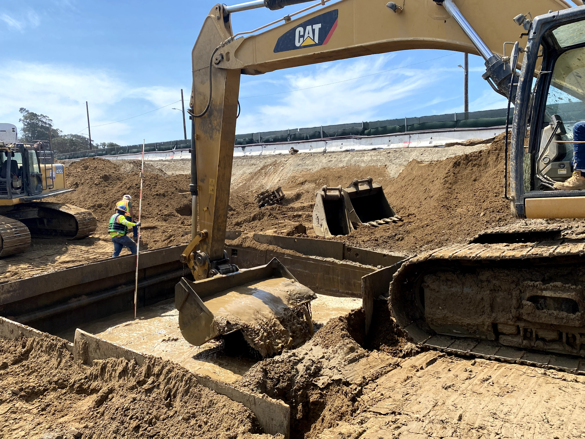
On this piece of the causeway, the engineer is fishing for more rocks to remove. Sometimes the earth-movers must dig and clear a hole as deep as 20 feet before the vibrocompactor can be brought in. (Engeo, 2020)
For soil densification, the second geotechnical process, the arrays of massive vibrocompactors each use four probes to shake up and densify the sand and shoal on which the the island sits.

A technology from Japan, the Jafec 40,000 Direct Power Compactors each weigh 53 tons and are 75 feet long. (Engeo, 2018)
The vibro compaction process densifies the sandy fill and prevents it from liquefying during earthquakes and floods.
The vibrating probes or beams in each compactor are operated by a very large, four-prong apparatus attached to an extremely tall crane. (Engeo, 2019)

After vibro compaction comes the third process. Loose, uneven land surfaces are smoothed and compacted by huge orange tampers, also suspended from tall cranes.

(Engeo, 2020)
Fourth, after the topsoil is prepared by the tamper, a large, temporary fill, referred to as a surcharge, is placed on the surface. Surcharges, sometimes in excess of 20 feet high, are heavier than planned buildings and any other future load (soil, plants, pavement and so on) planned for the site. The purpose of the surcharge is to squeeze the compressible Bay mud, so that its excess water will seep up through the wick drains and be dispersed through the sand and shoal strata.
This process allows future buildings and soil to be placed on the surface without significant sinking, also known as settlement. Typically, when the surcharge is removed, about one-third of it is left in place to reach the required finish elevation of the ground. Raised surfaces are another built adaptation to address sea level rise.

(Engeo, 2020)
On parts of the coast of the island, after tamping, comes a process called deep soil mixing. It strenghthens the shoreline by mixing a cement slurry deep down into the earth, in areas where future facilities will be constructed close to or on the perimeter. These facilities include the ferry terminal, the marina, the causeway, and lifeline utilities.
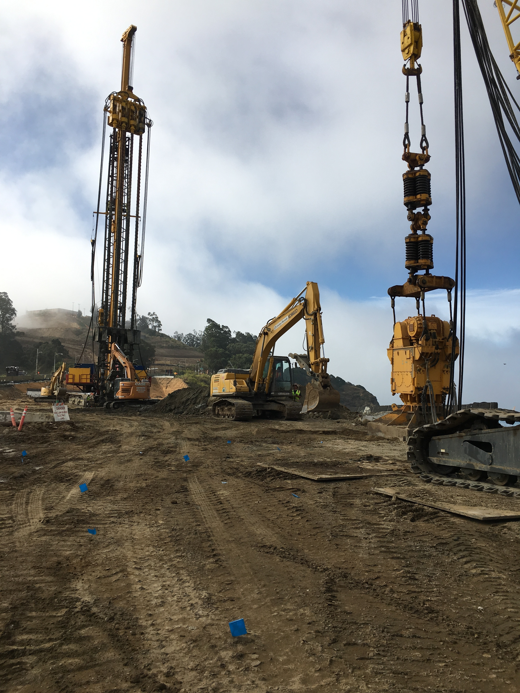
These wicks are installed as deep as 150 feet into the ground. Meanwhile, new giant machines called vibrocompactors are arranged in an array to densify large areas of adjacent pieces of unstable land. (Engeo, 2019)

The upper parts of four augurs are components of a deep soil mixing machine, here, as it is being installed down into the ground. The top of the augurs are spiraled, to minimize the soil and cement that return to the surface. (Engeo, 2020)
These mixing paddles are the bottom part of the augurs, beneath the ground in the picture above. The paddles are each five feet in diameter. They mix the cement slurry with the deep soil to create strong underground walls. The walls consist of overlapping columns set perpendicular to the shoreline. This image shows the paddles after the augurs have been brought up to the surface. (Engeo, 2019)


Excavators, bulldozers, berms: planners initally thought the Navy chapel would need to be moved to protect it during earth moving and rebuilding. Instead, they are keeping the chapel safe with sandbags and checking it regularly for distortions, which, if they occur, should be relatively minor and easy to repair. (Engeo, 2020)
The Navy Cleanup
Like many sites across the country and around the world, parts of the island’s soil were contaminated due to military-industrial practices from 1941 -1997, when the Naval base was decommissioned. Since the detection of toxins, including radiation in the soil, the Navy has been working to decontaminate the island. 75 percent of Treasure Island has been cleaned and certified safe by the State of California for current and planned future uses. The U.S. Navy’s search for, identification, and mitigation of toxins continues.
The stationary ship "Pandemonium" was built on the island for naval training. Christened in 1957, sailors on board learned to detect and clean up radioactive materials. (The U.S. Navy, 1957)

The Navy was serious in simulating conditions for teaching responses to the nuclear war. These pictures show the mock mushroom cloud created with TNT and gasoline in 1957 on Treasure Island. (SFHC/SFPL)
In the 1960s sailors learned to decontaminate trash resulting from ABC warfare. ABC stands for atomic, biological and chemical weapons. When training was over, some of this trash was left in dumps or buried underground.

The Navy clean-up has been going on for most of this century. Naval remediation continues and a number of current residents remain concerned about environmental hazards. (The U.S. Navy, 1969)
In the 1980s, Damage Controlmen on Treasure Island learned to prevent and fight fires and defend against what was now called CBR (Chemical, Biological, Radiological) warfare.
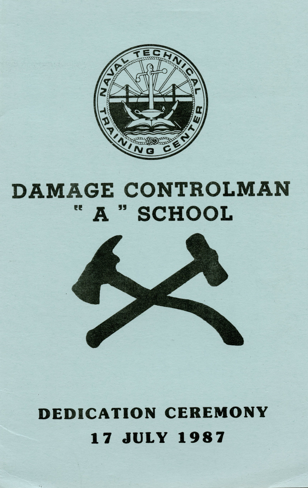
Waste from fire retardants is also toxic and is now being designated at Treasure Island and across the country as such and removed. (Treasure Island Museum/ The U.S.Navy, 1987)
A member of a Navy cleanup crew tests soil at a possibly contaminated site on Treasure Island. (The U.S. Navy, 2012)
Urban Design For a Rising Bay
The Golden Gate International Exposition opened in 1939 on the brand new island resting at sea level.

Built features, as well as the geotechnical reengineering for the redevelopment, will protect Treasure Island from SLR. (Treasure Island Museum, 1949)
Almost all new buildings will be on top of re-engineered, higher land and a building pad, elevated to safeguard against SLR.
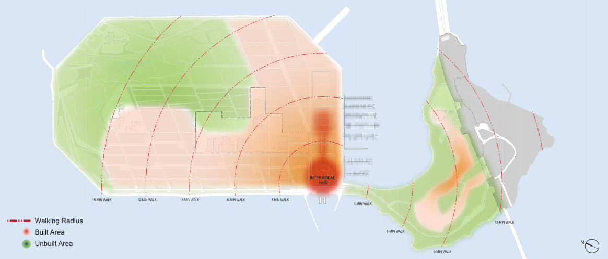
Pink means more stable land in the south and southeast, where all new housing and commercial buildings will be built. (TIDA, TICD 2011)

The green southwest section here indicates land fabricated atop Yerba Buena Shoals, the highest, most stable seabed of the island. The historic buildings are here, as well as the site for the new Island Center district. (TIDA, TICD 2011)
A rendering of how the completed redevelopment of Treasure and Yerba Buena Islands might look from the air shows the San Francisco mainland, to the southwest, in the background.

A 300 foot buffer zone will run between new buildings and Treasure Island's coast. The buffer zone is another protection against possible flooding from bigger, taller ocean waves due to SLR. (TIDA , TICD 2011).

From the southeast, another imagined view of the Treasure Island development when completed in 2035 (TIDA, TICD 2011)
New Neighbors
Some of the outstanding questions: will it be possible to integrate a high-low income community, where the middle is largely missing? The rich majority is likely to mirror the tech sector, Asian and White. Will White and Asian young adults mix with Black and Brown parents and their young children? There will be a new public school system on the island, so that every local child can have a place from pre-k through high school.
Will the wealthy send their children to school with the poor? Will low and high-income earners collaborate on community-wide activities, such as growing food together in the Urban Agricultural Park? Will they intermingle in the plazas and the parks? These types of queries will not be answered until near mid-century. By 2050, new homes, businesses and services are scheduled to have been in full operation for more than ten years.
Island stakeholders interviewed on Zoom by researchers from Case Western University They were questioned on how to create an inclusive, mixed income community in the new development.
Art will be everywhere outdoors in the new Treasure Island. As much as 50 million dollars for the redevelopment will be generated by the state's "1 % for Art in Private Development" fund.
New public art by well known artists will be placed throughout both islands' plazas, parks and paths. (Treasure Island Arts Master Plan, San Francisco Arts Commission, 2017)
The fine arts program is designed to draw residents and visitors into the new, large network of public spaces, in order to foster civic and community engagement, as well as tourism. (Treasure Island Arts Master Plan, San Francisco Arts Commission, 2017)
Residents of Treasure Island have been making art all along. In 2018 locals worked with Precita Eyes Muralists on a community painting project. First they designed and planned the piece.
(TIDA, TICD, 2018)
Twenty artists from the community helped complete the mural, adding color. (TIDA, TICD, 2018)
The Treasure Island Gymnasium was transformed. It will remain as part of the new development. (TIDA, TICD, 2018)
Here & Now
Today the Treasure Island community is 2000 strong. The number of residents in 2035 at full buildout is expected to reach 24,000, more than twelve times the current size. More than 70 percent of incoming residents will be mid-to-high income, with the majority in the higher brackets. Currently, mid-to-low income people make up the mix.
Although the population is small, the island is now home to a higher percentage of residents who identify as Black, Indigenous or people of color (BIPOC) than the greater San Francisco metro area, including much larger but quite diverse communities, Vallejo and Oakland.
One Treasure Island (One TI) is the umbrella for social services and will remain so in the new development. Programs for all ages run at The Ship Shape Community Center, a popular spot for current residents. (One TI)
One TI brings together sponsors, such as the Treasure Island Museum, for a back-to-school backpack (and pizza!) give-away event. In 2021 partners also included the San Francisco Fire and Police Departments. (One TI)
(One TI, 2021)
The current residents in today’s low-income rentals and subsidized homes will be offered comparable units in the new development. The other half of the current housing stock was upgraded and billed as “market-rate”, although viewed by some renters as sub-standard. These renters will be offered replacement housing on island through a lottery. TIDA and One TI are also providing a program for new homeowners.
One of the murals on the island produced from art by local school children (One TI)
A graduate of One TI's Construction Training Program poses with members of the organization's staff outside the community center. The woman's top flutters in a strong wind, ever present on the island. (One TI)
One TI Construction Training Program graduates working on the island (One TI)
Future People
The Treasure Island Development Authority (TIDA) is part of the City and County of San Francisco. TIDA is requiring that 27% of new housing be subsidized, affordable or below market-rate. This obligation is imposed on both non-profit and commercial developers. The redevelopment will continue to provide new homes for the previously incarcerated, formerly homeless and veterans.
In its own Treasure Island-sized way, these provisions try to address the problem of displacement through gentrification that has troubled San Francisco’s mainland over the last 25 years.
In 2016 nearly 70 percent of the children on the island were African-American or Latino. Some of the households were headed by formerly homeless individuals.

With the majority of the island kids being girls, One TI creates programs to empower tomorrow's women.
Affordable and subsidized housing will be included in mid-rise market-rate buildings in the redevelopment. TIDA's aim is to mix people of different income levels in all aspects of daily life.
(TIDA, TICD, 2011)
The new development will include an urban agricultural park. Organizers will encourage all residents to become involved in producing food and in overall environmental stewardship of their new neighborhood. These kinds of activities can bridge income and racial gaps. (wikimedia commons/Spirtu/Creative Commons Attribution-Share Alike 3.0)
The Wilds
Scientists say the Bay Area needs to greatly expand its wetlands in order to combat sea level rise (SLR). The increase targeted is at least 54,000 additional acres, an area twice the size of the city of San Francisco. Treasure Island is using this science in blueprints for the redevelopment.

The new wetlands, part of the remake of the north and eastern section of the island called The Wilds, are designed as if they were naturally occuring. (TIDA, TICD, 2017)
The great egret is one of the many species that might make Treasure Island home, as the place becomes much more green. (picaryl/ National Parks Gallery, 2010)
The marshes in The Wilds will expand as do sea level rise and annual precipitation rates. (TIDA, 2011)
The greening of Treasure Island, including the smaller public parks and plazas with built features, will create new habitats for resident and migratory species, some of which have gone and might very well return. (ecoatlas/ TIDA 2017)
Ecological Context, The Bay Area (circa 1880) Compare this map with the one below to understand habitat loss in the Bay area during the 20th century. (ecoatlas/TIDA 2017)
[These maps are from The Bay Area EcoAtlas and author Robin M. Grossinger. The atlas was produced by the San Francisco Estuary Institute (sfei.org) and are used by permission. The SFEI will be producing an updated Baylands Ecological Context map by 2024.]
The redevelopment's rainwater treatment systems are sized to capture and treat 90 percent of annual rainfall volume projected in 2035. (TIDA, TICD, 2017)
(TIDA, TICD, 2017)
Water is already being collected and treated in the first phase of the redo of Treasure Island.
This map identifies the initial recycling systems. From existing buildings, wastewater is captured, treated and returned to structures and gardens as grey water, to be used to flush toilets and for irrigation. (TIDA, TICD, 2017)
Adaptive Perimeters
Treasure Island has historically been an insubstantial proposition. Its future, though, if all goes as planned, is solid.
The developers have built a comprehensive plan of adaptive design, which is flexible in order to evolve with sea level rise (SLR) and the science of its prediction. The remake is also fortifying the island in anticipation of future earthquakes. (picryl/NARA 1936)
SLR continues to rise, at an accelerating pace in many places. Higher baseline sea level when combined with more intense storms and bigger waves creates higher risk of flooding in all coastal areas.
(CHK Cross Media International, 2019)
Along Treasure Island's north and western coast prevailing westerly winds, sweeping in from the Golden Gate, are particularly strong. The redevelopment plan is highly sensitive to high winds across the island. Even the new street grid is slanted to protect pedestrians, bikes and cars from the constant gusts. (Cross Media International,2020)
Planning for adaptive remediation on the perimeters of the island is in place for up to 36 inches of SLR. The construction of these additional safegaurds will be triggered when SLR reaches 32 inches. (TIDA, TICD, 2011)
Clipper Cove is along the island's relatively protected southeast shore and marina. These diagrams chart the current mean high water level (MHWL) of 5.6 feet and predict a future mark of 8.6 feet.
The chart describes the adaptation to be built at SLR 32 inches: a low sea wall. It will be low enough to keep views across the Bay open while serving as a barrier against storm surges producing waves greater than 14 feet. (TIDA, TICD, 2011)
The north coast is the island's section most threatened by SLR. Adaptations there will mimic the natural, lush with native plants that anchor the soil. The pedestrian walkways through this section can be raised if scientists project regular flooding, so as to preserve education and recreation benefits to the public. (TIDA, TICD, 2011)
The streets, with their sidewalks and bike trails, will be laid out in a way which, as well as sheltering people from the wind, will maximize sun exposure for warmth. Street design for the new development favors pedestrian and bike traffic over automobiles.

Designs for the Cityside waterfront and the Eastern Shoreline parks include treelines for wind mitigation, walkways and improvements to exisiting shoreline buffers. (TIDA, TICD, 2011)
This diagram shows how shorelines are being built up and adaptations modeled to assure streets, walkways and parks accommodate waves, rising sea level and storm surges. (TIDA, TICD, 2011))
From TIDA's 2011 design document for the redevelopment, "The design will create a place specific landscape and recognize the island's unique human-made conditions by amplifying the constructed edge, engaging the natural forces of the Bay, and creating landscape that responds to these conditions."
(TIDA, TICD, 2011)
Green Returns
During the Golden Gate International Exposition, one of the island's nicknames was 'The Magic City', but WWII shortly put an end to the idyll and its gorgeous lawns and gardens. Treasure Island was a concrete town for the rest of the 20th century and into the 21st.
An illustrated map of the second and final season of the Golden Gate International Exposition, 1940, shows its greenery. (Treasure Island Museum)
Circa 1958, this Navy attack squadron flies over the impervious Naval Station Treasure Island. (U.S. Navy National Museum of Naval Aviation)
The contrast of leafy Yerba Buena to Treasure Island, between 1941 and the redevelopment, in this 1970s naval era postcard (Treasure Island Museum)
On the redeveloped island's north and east, called The Wilds, wetlands and green space are designed to absorb both rainwater and ocean waves if they breach the perimeter. In turn both types of water will nourish the landscape.
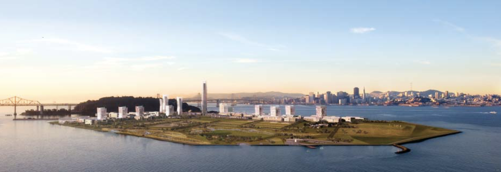
The Wilds are part of the parks system. They will provide public benefit through education programs and passive recreation via a system of raised walkways.(TIDA, TICD, 2011)
The new parks system, like the full redevelopment, reaches across both islands. The enhancement of green space on Yerba Buena Island will follow existing contours of the land.
This is an architectural rendering of the crown jewel in the plans for parks, Yerba Buena's Hilltop. (TIDA, TICD, 2011)
Facilities in the new parks and plazas feature significant aspects of the water management systems, including rain collecting gardens and primary storm drains. (TIDA, TICD, 2015)
Well-Hydrated
A state-of-the-art rainwater management system will rid the islands of ponding stormwater and recycle it.
(Shutterstock)

New green areas will collect stormwater through the engineered drainage systems. Some of the rain will be recycled as grey water to sustain a new landscape of native planting throughout the redeveloped islands. (TIDA, TICD 2017)
Some of the rainwater will be biotreated and released into the Bay. All drinking water will be piped from the mainland.
The new drainage system includes sustainable conveyance through vegetative channels called swales. (TIDA 2017)
Planters throughout the island biotreat and recycle stormwater and will decorate parks, plazas, and promenades, as imagined in this rendering. (TIDA, TICD 2017)
AWARDED FOR SUSTAINABILITY
Recognition for sustainability represented in TIDA's 2011 Design for Development for Treasure Island:
--LEED-ND Platinum certification, the highest designation for a green, sustainable development
--Designated by the Clinton Climate Initiative (now C40 Cities) as one of only 18 Climate Positive Projects worldwide
--Honored by the American Institute of Architects as a “new urban ecology with innovative sustainable strategies"
(TICD, CMG, 2017)